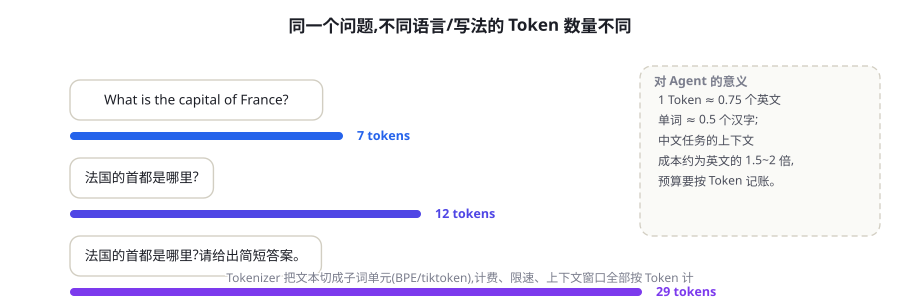
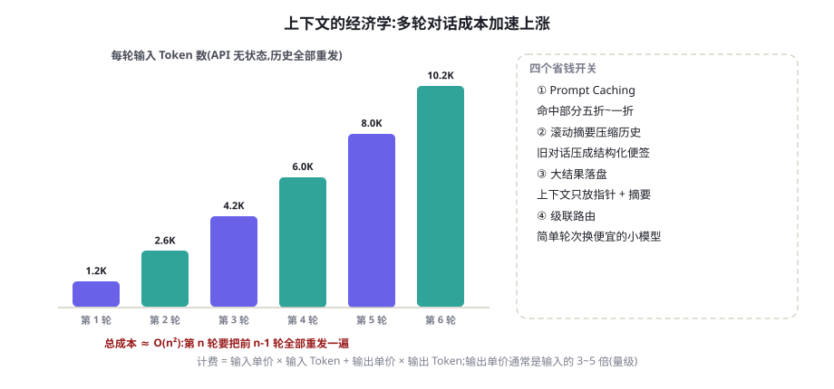
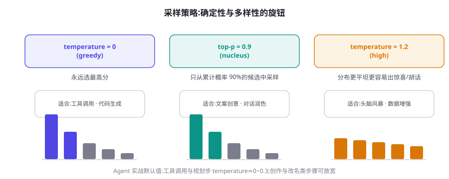

Token、上下文窗口与采样策略
Token 计费、上下文窗口、采样参数，是每个 LLM 应用都要算的三笔基础账。本章讲清分词器如何切分文本、上下文窗口的名义容量与有效容量的差距、temperature 与 top-p 到底在调什么——读完你能精确估算一次调用的成本，并给 Agent 的每个环节配上正确的参数。
Token：模型眼里的文字单位
第 4 章说过，模型的世界里没有「字」和「词」，只有 Token（词元）：文本先被分词器（Tokenizer）切成 Token 序列，每个 Token 对应词表里的一个编号，再查表变成向量。分词规则由模型厂商自定义，词表互不通用，同一段文字在不同模型下的 Token 数可以差出近一倍，所以任何 Token 数都必须以目标模型的分词器实测为准。

Token 化最反直觉的后果是：模型对「字符级」的操作天然迟钝。问 GPT 级模型「strawberry 里有几个 r」，早期模型经常答错——因为「strawberry」在词表里可能是 1~3 个 Token，字母序列根本没有出现在输入里；数字母、对齐长数字的位数、做逐字符变换，都属于模型必须「额外学会」的技能，而不是分词机制自带的。同理，大数字（如 9.11 与 9.9 比大小）的早期翻车，也与 Token 切分和训练分布有关。新一代模型靠着数据与训练改进基本补齐了这类短板，但机制上的脆弱点仍在：当你的应用对拼写、编号、代码缩进敏感时，先想想这些信息经过分词后还剩多少。
用 OpenAI 的 tiktoken 库花一分钟建立体感：
import tiktoken
enc = tiktoken.get_encoding("o200k_base") # GPT-4o 系列词表;旧模型用 cl100k_base
texts = ["The capital of France is Paris.",
"法国的首都是巴黎。",
"订单号 A-2024-0917-0042 已发货"]
for t in texts:
ids = enc.encode(t)
print(len(ids), "tokens |", [enc.decode([i]) for i in ids])
# 典型观察(量级):英文句约 7~9 个 Token;中文句在旧词表下明显更多;
# 混在长串里的编号/代码,Token 数与字符数几乎无关——按词表切,不按字面切。还有一个藏在水面下的成本：特殊 Token 与对话模板。API 收到 messages 数组后，服务端会按模型的对话模板把它重新拼成一条完整序列，其间插入的角色标记、起止符（如各类 <|im_start|> 风格的控制 Token）都要计入上下文，且不可省略。多轮消息越多，模板开销越大；了解这一点有助于解释「自己数的 Token 和账单对不上」——对账时要用厂商提供的用量字段，而不是只数正文。
「1000 字 ≈ 多少 Token」没有统一答案：英文约 4 字符对应 1 Token；中文视词表从每字约 0.6 到 1.5 个 Token 不等。估算成本、控制预算、设计分块大小，一律用目标模型的分词器实测，不要用字符数拍脑袋。跨模型迁移提示词时，Token 数和成本都要重新核算。
BPE：子词词表是怎么炼成的
主流分词算法是字节对编码（Byte-Pair Encoding, BPE）及其变体（Sennrich et al., 2016 首次将其引入神经机器翻译）。逻辑朴素得像贪心合并：先把语料切成最细的单位（字节或字符），统计相邻单位的出现频率，把最高频的一对合并成新单位，写进词表；重复统计与合并，直到达到预设词表大小（当代 LLM 约在 10 万~20 万量级）。
这个机制解释了几个工程现象。为什么英文「便宜」中文「贵」：英文词表里有大量完整单词和常用片段，一个词往往 1~2 个 Token 就装下；早期中文词表覆盖少，常用字要 1~2 个 Token，整句成本翻倍（新一代词表已大幅改善，常见汉字多为 1 Token）。为什么代码和 JSON 成本高：缩进空格、引号、标点在分词里往往各自成 Token，密集符号的文本 Token 数远超同长度散文。为什么提示词要避免无意义格式：装饰性的分隔线、重复的空行都在花钱——写给模型看的部分，紧凑一点没有坏处。这些微观差异单次看不出，在 Agent 每天调用数万次的场景下会放大成真实的账单差距。
上下文窗口：名义容量与有效容量
上下文窗口（Context Window）是模型单次调用能处理的 Token 总上限，输入和输出共享这个额度：窗口 128K 时，输入占了 120K，输出最多只剩 8K。这条约束的演进速度惊人：GPT-2 时代是 1K 量级，2023 年主流是 8K~32K，2024 年起 128K~200K 成为旗舰标配，Gemini 系列则把标称窗口推到百万级。技术根因之一是位置编码的外推（RoPE 及其插值扩展，见第 4 章），之二是注意力算力的工程优化。
但工程上必须建立第二个概念：有效容量 < 名义容量。三个原因：其一，「Lost in the Middle」——模型对窗口首尾的信息利用最好，中段的召回率明显下降（Liu et al., 2023 在多组长上下文模型上验证了这条 U 形曲线）；其二，「大海捞针」（在超长文档中植入一句事实再提问）这类测试的接近满分成绩，掩盖了真实多跳任务（需要综合散落在中段多处信息）上的显著退化；其三，注意力随长度平方增长的成本，使得「把所有东西都塞进窗口」在账单上不可持续。Agent 的上下文是它唯一的工作记忆，但它是一份读得越深越费劲的记忆，不是无限容量的硬盘。
由此得出本书反复出现的结论：上下文管理是 Agent 工程的第一主题。放什么进窗口、按什么顺序放、什么时候压缩、什么时候外置到检索，这些决策（第 23 章上下文工程专章展开）对系统质量的影响，通常大于提示词的措辞技巧。
给你一个可操作的忠告：有效容量要实测，别信单一跑分。方法是拿你自己的真实任务构造「压力样本」：把关键事实分别放在输入的开头、中段、结尾，再把相关证据拆散到不同距离，观察模型的召回与综合表现。同一个模型的不同版本、不同量化等级，有效容量的表现都可能不同；把这项测试纳入模型选型与升级的固定流程，几分钟的测试能省掉数周的排查。
Token 经济学：三笔账
计费公式简单：费用 = 输入 Token × 输入单价 + 输出 Token × 输出单价。但三笔账叠加起来，直觉经常失灵。
第一笔：输出比输入贵。主流 API 的输出单价通常是输入的 3~5 倍（量级）。技术上这不冤枉：输入走可并行的 Prefill，输出走受显存带宽限制的逐 Token Decode（第 4 章），每 Token 的服务成本更高。工程推论：让模型输出 JSON 而不是散文、要摘要而不是全文、别让它把检索结果复述一遍——压缩输出是最高杠杆的省钱手段。
第二笔：多轮对话是复利。API 无状态，第 n 轮请求要把前 n-1 轮的完整历史重发一遍。一个每轮新增 300 Token、带 800 Token 系统提示词的客服 Agent，到第 20 轮时单轮输入已超过 6000 Token——总输入成本随轮数近似平方增长。

第三笔：缓存能打折，但要设计前缀。Prompt Caching 让你为「与上次相同的前缀」付极低的单价——各厂商对命中部分给出约五折到一折的优惠，技术根源就是服务端复用了你前缀的 KV Cache（第 4 章）。要吃到折扣，系统提示词、工具 Schema、Few-shot 示例这些稳定内容必须放在 Prompt 最前面且保持字节级一致，动态内容放后面。把时间戳或用户名写进系统提示词开头，缓存就永远 miss。
def cost_usd(in_toks, out_toks, in_price=2.5, out_price=10.0):
"""按每百万 Token 单价(美元)估算单次调用成本。
示例单价取主流旗舰 API 的典型档位:输出约为输入的 4 倍。"""
return in_toks / 1e6 * in_price + out_toks / 1e6 * out_price
history = 800 # 系统提示词 + 工具说明(每轮固定重发)
for turn, out_toks in enumerate([300] * 8, start=1): # 每轮新增 300 Token
history += 300
print(f"第 {turn:2d} 轮: 输入 {history:5d} tok, "
f"本轮成本 ${cost_usd(history, out_toks):.5f}")
# 运行可见:输入成本逐轮上涨;8 轮的总成本里,后 4 轮占了近七成。
# 应对:滚动摘要压缩历史 / Prompt Caching / 大结果落盘只回指针(见第 23 章)。有人会问：既然历史不变，为什么不让 API 保存会话状态、每次只发增量？原因有三：弹性扩缩容使会话与具体机器解耦；多租户下缓存命中与淘汰的调度复杂；以及无状态接口天生好做容灾与重放。各厂商的折中就是现在的形态——对话状态由你持有，但前缀缓存由服务端提供折扣。自己部署推理时（vLLM 等）则可以真正把 KV Cache 管起来（Kwon et al., 2023）。
采样策略：temperature、top-p 与常见误区
模型每步输出的不是 Token，而是一个概率分布；「采样策略」决定如何从这个分布里挑出那一个 Token。所有旋钮都在对分布做同一族操作——调整确定性与多样性的比例。
temperature（温度）：把 logits 除以 T 再 softmax。T 趋近 0 时分布最尖，几乎必然取最高分（贪心解码）；T=1 保持训练分布原样；T>1 把分布压平，冷门词更可能出现。直觉上，T 调的是「愿意为多样性冒多大险」。top-p（nucleus sampling，核采样）：把候选按概率降序排列，保留累计概率达到 p 的最小集合，在集合内重新归一化后采样——候选数量随分布形状自适应：模型很笃定时集合可能只有 1~2 个词，犹豫时自动放宽。top-k 是它的静态版：无条件保留前 k 个候选，分布形状再尖也保留 k 个，因此当代 API 中已不如 top-p 常用。

用一组具体数字建立体感。设某步三个候选的 logits 为 [5.0, 4.0, 2.0]：T=1 时 softmax 给出约 0.71 / 0.26 / 0.04；T=0.5 把差距放大，变成约 0.88 / 0.12 / 0.00，冷门候选几乎出局；T=2 把差距压缩，变成约 0.55 / 0.33 / 0.12，冷门候选获得了可见的出头机会。温度没有增加任何信息，它只改变「冒险程度」——这也是为什么它必须与任务的风险容忍度匹配，而不是存在某个全局最优值。
问题：朴素采样在开放生成中会产生重复、跑偏的「退化文本」，而束搜索（beam search）又输出千篇一律的安全句。方法：提出 nucleus（top-p）采样——只从累计概率超过 p 的最小候选集中抽样。结果：在人类评测中显著优于束搜索与固定 top-k，成为各 API 的默认选项之一。
| 参数 | 机制 | 典型取值 | 常见误区 |
|---|---|---|---|
| temperature | logits 缩放后 softmax，调分布尖平 | 工具/代码 0~0.3；日常 0.5~0.7；创意 0.8~1.2 | 以为 0 就完全确定（见下文）；同时大幅调 T 和 top-p 互相纠缠 |
| top_p | 保留累计概率 ≥ p 的最小集合，集合内重采样 | 0.9~0.95 | 设成 0.1 之类过小值，等于强制贪心，输出呆板 |
| top_k | 无条件保留前 k 个候选 | 20~50（视 API 是否开放） | 与 top-p 叠加使用时含义难推断，一般只调一个 |
| max_tokens | 输出长度硬上限 | 按任务预算设置 | 设太小导致输出截断（finish_reason=length），下游解析报错 |
| stop sequences | 命中即停止生成 | 结构化输出的边界符 | 把它当解析器用；格式保障应交给受约束解码（第 8 章） |
未必。GPU 浮点运算的结合顺序不固定、服务端批处理组成随负载变化、MoE 模型的路由也可能受批影响——同一输入两次调用仍可能产生不同输出，各厂商文档对此有明确说明（部分 API 提供 seed 参数，但也不承诺跨批次严格一致）。需要严格可复现的环节，靠的是「确定性算法 + 版本化评测」，而不是祈祷温度归零。
实战手册：Agent 各环节的参数配置
把前几节汇成一张可执行的表。核心原则：Agent 的绝大多数环节要确定性，少数环节要多样性，别用一组参数跑全程。
| Agent 环节 | temperature | top_p | 理由 |
|---|---|---|---|
| 路由 / 分类 / 意图识别 | 0~0.2 | 1.0 | 答案应稳定可复现，随机性纯增噪声 |
| 工具调用与参数生成 | 0~0.2 | 1.0 | 参数错一个字就是一次失败调用 |
| 规划 / 推理步 | 0.2~0.4 | 0.9~1.0 | 保留少量多样性避免死循环，主体求稳 |
| 代码生成与修改 | 0~0.2 | 1.0 | 代码的正确性容不下「惊喜」 |
| 文案 / 改写 / 命名 | 0.7~1.0 | 0.9~0.95 | 多样性是质量的一部分 |
| Self-Consistency 多路采样 | 0.7~1.0 | 0.95 | 低温下 N 条路径几乎相同，投票失去意义（第 7 章） |
三条收尾建议。其一，把生成配置（模型、温度、top_p、max_tokens）与提示词一起纳入版本管理，任何改动都跑一遍固定测试集——「感觉更顺了」不是证据，回归分数才是（第 13 章展开评测思维）。其二，Few-shot 示例是 Token 大户：每条示例都随每次调用重复计费，示例越多上下文越满，取舍标准是「这条示例是否改变了模型在边界情况上的行为」，而不是「多给点总是好的」（第 6 章展开）。其三，随机性不是敌人：创意环节、避免重复循环、以及第 7 章的多路采样投票，都需要有意的随机；关键是结构化地使用它——哪个环节要随机、随机多少、随机结果如何聚合，都应该写在配置里，而不是每次调用随手一填。
分词器的工程陷阱清单
分词是全书出现频率最高的「隐形变量」——同一个提示词，只是换一种写法，token 数与模型理解都会变化。以下是实践中最容易踩的坑：
- 数字被切碎：
1234567可能被切成多段，模型对多位数运算的不确定性部分来源于此。金额、日期这类关键数字，尽量结构化传递（JSON 字段）而不是埋在自然语言里。 - 中英混排的成本差：中文在多数 BPE 词表中的压缩率低于英文，同等内容中文 token 数约为英文的 1.5~2 倍。面向中文的 Agent，成本预算要按这个比例放大。
- 代码与专有名词：驼峰命名、路径、版本号常被切成碎片。工具描述里出现奇怪的 API 名时，考虑在 few-shot 示例里「教一遍」正确用法。
- 不可见字符：从网页复制的文本可能带零宽字符或全角空格，既浪费 token 又可能触发奇怪行为。入口处做一次 Unicode 规范化（NFC）+ 去除不可见字符，是 RAG 管线的标准步骤。
- 模板前后缀：各厂商的对话模板会在你的文本前后加控制 token，实测计费常比「你自己数的」多几个百分点——按账单校准你的成本模型。
把「这段提示词多少 token」的悬念消灭在本地：用 tiktoken（OpenAI 系）或对应厂商的计数器写一个 10 行的计数脚本，接进你的提示词评审流程。上下文预算管理（第 23 章）的一切前提，是你能便宜、准确地数 token。
最后一个实践视角：采样参数是你最便宜的「模型切换器」。团队常为效果不佳直接换模型，但先检查采样配置往往十分钟就能解决——temperature 过高导致的「随机翻车」、top-p 过低导致的表达贫乏、max_tokens 未设导致的截断幻觉，占新手问题的相当比例。调参顺序建议：先定 temperature（按环节功能），再定 top-p（默认 1.0 或 0.9，二选一），最后按成本约束设置 max_tokens 与停止条件。第 15 章的 Agent Loop 会给出每个环节的默认值表。
本章小结
- Token 是模型的原子单位，各厂词表互不通用；中英文与代码的 Token 效率差异会直接反映在成本上，一切估算以目标分词器实测为准。
- BPE 用「高频对贪心合并」构建 10 万量级的子词词表：常见词整存、罕见词拆解、任意输入都能编码——没有未知词，但有「字符级信息丢失」的固有盲区。
- 上下文窗口是输入输出共享的硬上限；有效容量小于名义容量（Lost in the Middle、多跳任务退化），窗口是稀缺的工作记忆，不是硬盘。
- 成本三笔账：输出单价是输入的 3~5 倍量级；多轮对话因历史重发近似 O(n²)；Prompt Caching 给稳定前缀五折到一折——稳定内容必须前置且字节级一致。
- 采样参数调的是确定性与多样性的比例：Agent 的工具调用与代码环节低温，创意环节高温，Self-Consistency 采样必须高温；temperature=0 不保证严格确定。
- 一条工作习惯：任何进入生产的提示词，都应先过一遍本地 token 计数——成本、截断风险与注意力预算，全都由这个数字决定。
自测题
- 为什么「strawberry 数 r」这类任务对 LLM 历史上偏难？从 BPE 的机制出发解释。（提示：模型看到的是 Token id，还是字母序列？）
- 一个客服 Agent 每轮新增 300 Token，系统提示词 800 Token。第 10 轮的单轮输入是多少？如果接入 Prompt Caching，哪部分能吃到折扣？（提示：逐轮累加；稳定前缀在前。）
- 输出单价为什么比输入贵？基于 Prefill / Decode 的资源差异说明。（提示：并行计算 vs 显存带宽。）
- temperature 和 top-p 分别怎么改变候选集合？为什么两者不宜同时大幅调整？
- 哪些 Agent 环节「需要」随机性？没有随机会发生什么？（提示：想想第 7 章的多路采样与循环卡死。）
- 把一段 500 字的中文产品介绍分别用英文重写再翻译回来，用 tiktoken 比较三个版本的 token 数，解释差异来源。
参考文献与延伸阅读
- Sennrich, R., Haddow, B. & Birch, A. (2016). Neural Machine Translation of Rare Words with Subword Units. ACL 2016. arXiv:1508.07909
- Holtzman, A. et al. (2019). The Curious Case of Neural Text Degeneration. ICLR 2020. arXiv:1904.09751
- Liu, N. F. et al. (2023). Lost in the Middle: How Language Models Use Long Contexts. TACL 2024. arXiv:2307.03172
- Kwon, W. et al. (2023). Efficient Memory Management for Large Language Model Serving with PagedAttention. SOSP 2023. arXiv:2309.06180
- OpenAI. tiktoken: a fast BPE tokeniser for use with OpenAI's models. github.com/openai/tiktoken
- Anthropic. Prompt Caching 文档（定价与最佳实践）. docs.anthropic.com